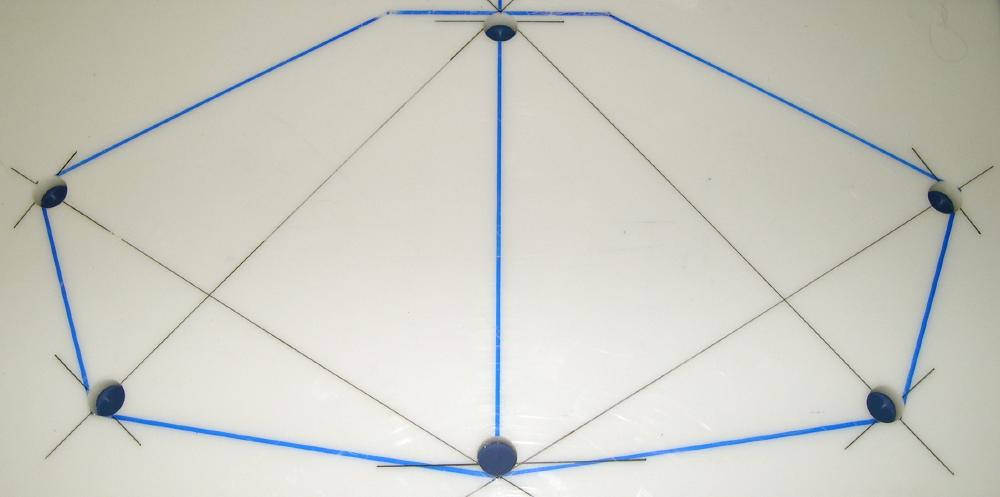

| Cross Sections | Menu Previous Page Next Page |
|  | |
|
Drilling HDPE - View of cross section 4 after the outside stringer holes are drilled. The inwale still needs to be marked and drilled. The flat section at the top is the forward coaming location. |
|